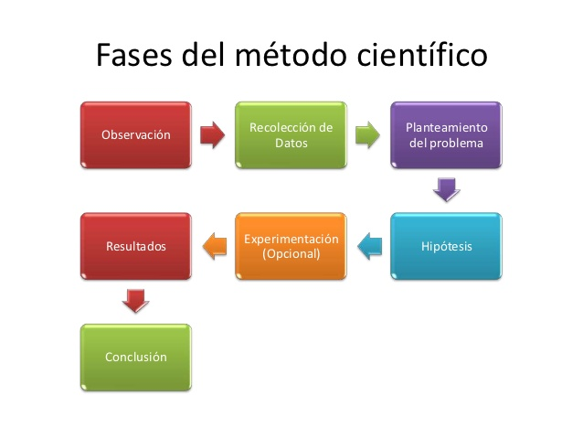

MÉTODO CIENTÍFICO
Introducción
El método científico es un método de investigación usado principalmente en la producción de conocimiento en las ciencias.
Para ser llamado científico, un método de investigación debe basarse en la empírica y en la medición, sujeto a los principios específicos de las pruebas de razonamiento.1 el método científico es: «un método o procedimiento que ha caracterizado a la ciencia natural desde el siglo XVII, que consiste en la observación sistemática, medición, experimentación, la formulación, análisis y modificación de las hipótesis.
El método científico está sustentado por dos pilares fundamentales. El primero de ellos es la reproducibilidad, es decir, la capacidad de repetir un determinado experimento, en cualquier lugar y por cualquier persona. Este pilar se basa, esencialmente, en la comunicación y publicidad de los resultados obtenidos (por ej. en forma de artículo científico). El segundo pilar es la refutabilidad. Es decir, que toda proposición científica tiene que ser susceptible de ser falsada o
refutada (falsacionismo).Esto implica que se podrían diseñar experimentos, que en el caso de dar resultados distintos a los predichos, negarían la hipótesis puesta a prueba.
El método científico
Es un método de investigación usado principalmente en la producción de conocimiento en las ciencias. Para ser llamado científico, un método de investigación debe basarse en la empírica y en la medición, sujeto a los principios específicos de las pruebas de razonamiento.
Un método o procedimiento que ha caracterizado a la ciencia natural desde el siglo XVII, que consiste en la observación sistemática, medición, experimentación, la formulación, análisis y modificación de las hipótesis.
Los conocimientos que la humanidad posee actualmente sobre las diversas ciencias de la naturaleza se deben, sobre todo, al trabajo de investigación de los científicos. El procedimiento que éstos emplean en su trabajo es lo que se llamará MÉTODO CIENTÍFICO.

Etapas del método científico
El método científico consta de las siguientes fases:
- Observación: Consiste en la recopilación de hechos acerca de un problema o fenómeno natural que despierta nuestra curiosidad. Las observaciones deben ser lo más claras y numerosas posible, porque han de servir como base de partida para la solución.
- Hipótesis: Es la explicación que nos damos ante el hecho observado. Su utilidad consiste en que nos proporciona una interpretación de los hechos de que disponemos, interpretación que debe ser puesta a prueba por observaciones y experimentos posteriores. Las hipótesis no deben ser tomadas nunca como verdaderas, debido a que un mismo hecho observado puede explicarse mediante numerosas hipótesis. El objeto de una buena hipótesis consiste solamente en darnos una explicación para estimularnos a hacer más experimentos y observaciones.
- Experimentación: consiste en reproducir y observar varias veces el hecho o fenómeno que se quiere estudiar, modificando las circunstancias que se consideren convenientes.Durante la experimentación, los científicos acostumbran a realizar múltiples medidas de diferentes magnitudes físicas. De esta manera pueden estudiar qué relación existe entre una magnitud y la otra. La experimentación determina la validez de las posibles explicaciones que nos hemos dado y decide el que una hipótesis se acepte o se deseche.
- Teoría: Es una hipótesis en cual se han relacionado una gran cantidad de hechos acerca del mismo fenómeno que nos intriga. Algunos autores consideran que la teoría no es otra cosa más que una hipótesis en la cual se consideran mayor número de hechos y en la cual la explicación que nos hemos forjado tiene mayor probabilidad de ser comprobada positivamente.
- Ley: Consiste en un conjunto de hechos derivados de observaciones y experimentos debidamente reunidos, clasificados e interpretados que se consideran demostrados. En otras palabras la ley no es otra cosa que una hipótesis que ha sido demostrada mediante el experimento. La ley nos permite predecir el desarrollo y evolución de cualquier fenómeno natural.